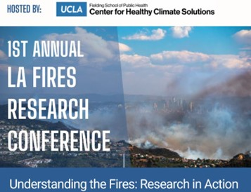

News & Updates
Dr. Salehi Participates in the 1st Annual LA Fires Research Conference
Dr. Salehi participated in the 1st Annual LA Fires Research Conference at UCLA, where she presented recent findings on the presence of microplastics in soil and air samples collected from residential homes following the Los Angeles wildfires.

New Podcast Episode on Agricultural Plastic Pollution
A new podcast episode featuring Dr. Salehi, Tim Reinbott, and Dibya Kanti Datta explores the issue of agricultural plastic pollution, including its environmental impacts and ongoing research efforts.
🎧 Listen to the episode:
Watch on YouTube

Dr. Salehi Featured on KOPN 89.5 FM’s Evening Edition
Dr. Salehi was a guest on KOPN 89.5 FM’s Evening Edition, where she discussed her research on plastic pollution.
Dr. Salehi thanks KOPN for hosting this thoughtful and engaging conversation.
🎧 Listen to the program:
Listen Here
Dr. Salehi’s Research on Microplastics in U.S. Cropland Highlighted by The Guardian
Dr. Salehi’s research on microplastic pollution from controlled-release fertilizers has been featured in The Guardian, drawing attention to how polymer-coated fertilizers commonly used on U.S. cropland may contribute to soil and water contamination.
The study found that plastic coatings on these fertilizers can break down into microplastic particles once applied to fields, raising concerns about long-term soil health and potential uptake by crops.
The coverage highlights the environmental implications of this emerging source of agricultural microplastic pollution and underscores the need for increased awareness and sustainable alternatives.
Read the article:
Read on The Guardian